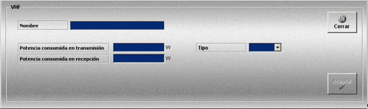
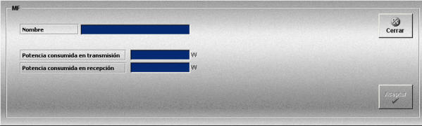

Radioteléfono
La creación y edición de equipos VHF se realiza mediante la siguiente ventana.

Esta ventana permite definir el equipo Radioteléfono VHF, que podrá ser añadido a las unidades participantes en los Ejercicios.
Para cada Radioteléfono VHF se definen los siguientes datos:
Nombre: Nombre del equipo.
Formato: caracteres alfanuméricos.
Potencia consumida en transmisión: Potencia consumida por el equipo durante la transmisión.
Unidades: vatios
Rango: 0.1 - 10000.0
Potencia consumida en recepción: Potencia consumida por el equipo durante la recepción.
Unidades: vatios
Rango: 0.1 - 10000.0
Tipo: Tipo de comunicación. Este campo puede tomar distintos valores que pueden variar de unos simuladores a otros según los servicios de radio que se definan.
La creación y edición de equipos MF se realiza mediante la siguiente ventana.

Esta ventana presenta los mismos datos que la anterior, excepto el campo Tipo.
Si la unidad dispone de baterías, la potencia consumida por el radioteléfono se tiene en cuenta para evaluar el tiempo que las baterías pueden alimentar a los diferentes equipos de comunicación de que dispone una unidad.